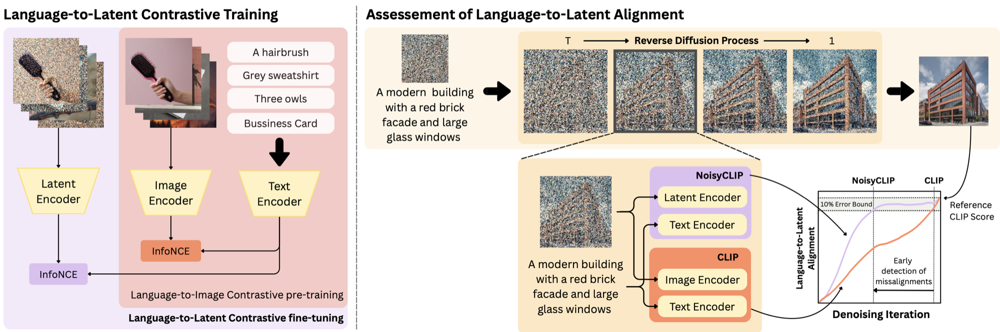
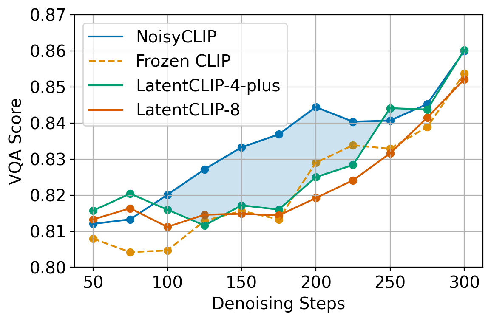
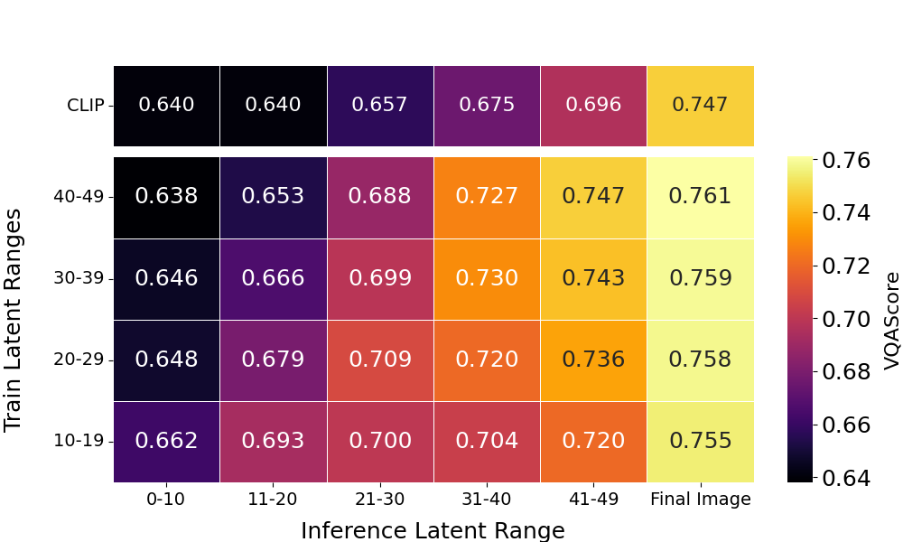
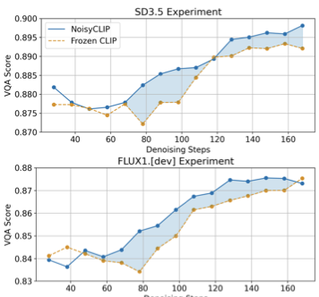
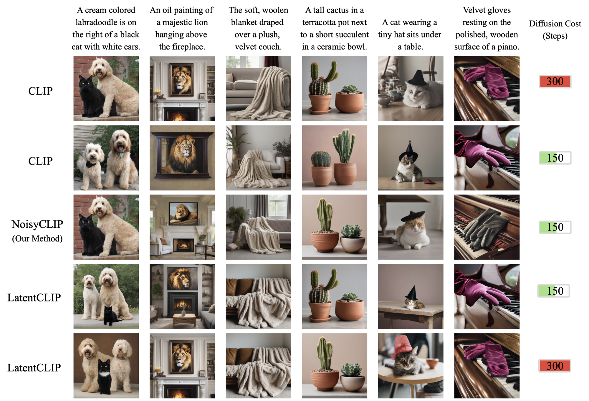

Conditional diffusion models frequently suffer from language-image misalignments. Due to the ambiguity of intermediate noise-corrupted latents, assessing prompt adherence currently requires completing the entire sampling trajectory. This late-stage evaluation incurs even higher computational costs during test-time scaling strategies, such as Best-of-N (BoN) sampling, as all misaligned trajectories must finish generation before being discarded. To tackle this, we propose NoisyCLIP, a noise-aware twin-tower model that enables early language-to-latent alignment estimation. By learning a vision encoder on noise-corrupted latents, we allow the model to "see" through the ambiguity of intermediate diffusion steps. To facilitate this training, we investigate noise-data augmentation sampling strategies and introduce two new benchmark datasets: Noisy-Conceptual-Captions and Noisy-GenAI-Bench. When applied as an early-stopping criterion for BoN, NoisyCLIP at half cost matches or beats frozen CLIP at full cost. Ultimately, this transforms alignment assessment from an expensive final check into a continuous monitoring tool, drastically reducing compute costs without sacrificing semantic fidelity.

A prompt is used to generate an image, and at an intermediate step the generated latent and the original prompt are encoded and their similarity is measured. NoisyCLIP produces a similarity score closely aligned with the score assessed on the final image, but already at intermediate stages of generation, allowing for the early identification of misalignments. We fine-tune only the visual encoder with a contrastive (InfoNCE) objective over noise-corrupted latents, keeping the text encoder frozen and shared with the diffusion model's conditioning space.
NoisyCLIP distinctly separates aligned from misaligned images as early as latent 20, whereas the frozen CLIP backbone only achieves this separation by latent 40. Our model also widens the score gap between the best and worst candidates throughout generation.
Used as an early-stopping ranker for Best-of-N sampling, NoisyCLIP reduces the computational budget by 50% with a minimal drop in VQAScore, and at this reduced budget it outperforms all baselines (CLIP, LatentCLIP) by nearly 2%.

Performance across inference ranges (columns) when trained with different latent ranges (rows). Moderate training noise (latents 20–29) strikes the best balance, remaining competitive with low-noise training in later inference ranges while performing better in the earlier, high-noise ranges.

Although trained only on SDXL data, NoisyCLIP transfers zero-shot to DiT-based architectures, achieving a +2% alignment gain on Stable Diffusion 3.5 and +1.8% on FLUX.1, alongside a 57% reduction in denoising steps.

(click to enlarge)

Images generated using a Best-of-6 strategy. We compare NoisyCLIP with CLIP and LatentCLIP-4-plus under two computation budgets: 150 and 300 diffusion steps. Our approach surpasses the baseline at the 150-step limit and achieves comparable or superior alignment to the full 300-step baselines, preserving fine-grained compositional attributes at half the computation.
@misc{ramos2026earlyestimationlanguagelatent,
title={Early Estimation of Language to Latent Alignment in Diffusion Models},
author={Vasco Ramos and Regev Cohen and Idan Szpektor and Joao Magalhaes},
year={2026},
eprint={2512.08505},
archivePrefix={arXiv},
primaryClass={cs.CV},
url={https://arxiv.org/abs/2512.08505},
}